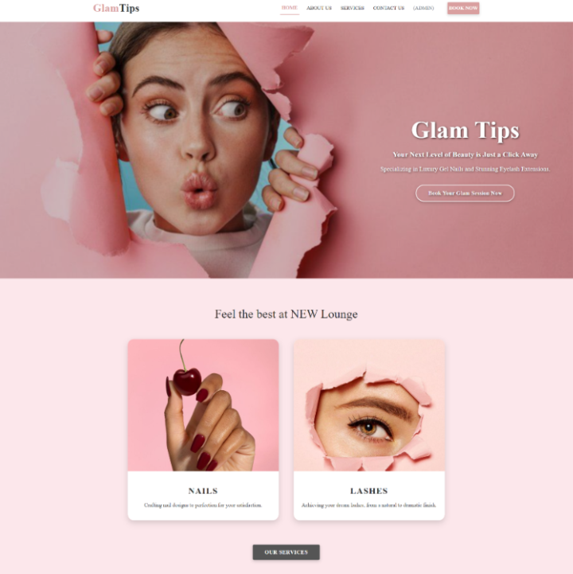
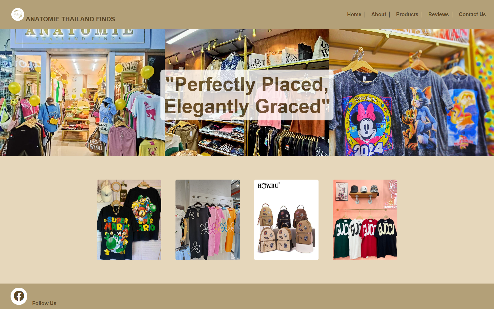
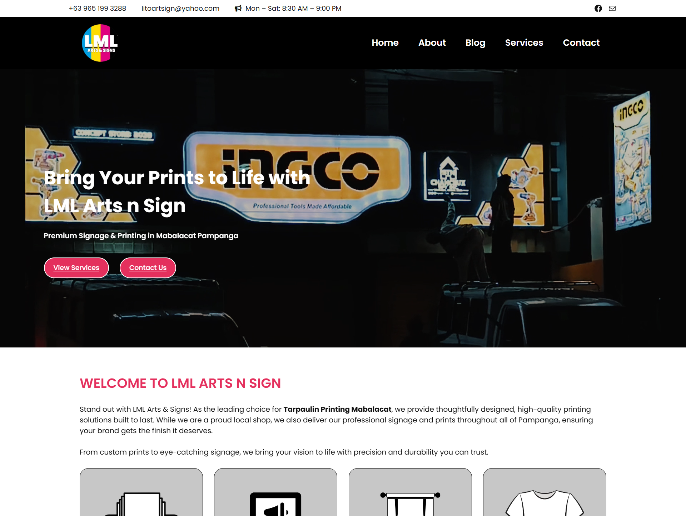
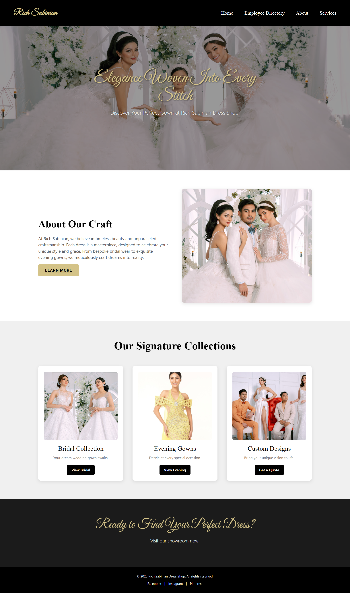

GlamTips Nails & Lashes Salon Website
A beauty brand site focused on elegance, warmth, and seamless UX — designed to feel as polished as the services it represents.

Singku Coffee Shop Website
An inviting café concept site — rich textures, warm tones, and a layout that makes you feel like you're already inside.

Anatomie Clothing Website
An editorial fashion front-end where clean layout and typographic rhythm let the products breathe and speak for themselves.

LML Arts & Sign
A professional WordPress business site for a Pampanga-based printing & signage shop — built to attract local customers and showcase their services online.
Hearing First Website
A clean, accessible healthcare website designed to help patients find hearing health resources with ease.

Rich Sabinian Website
An editorial personal branding site built with Angular — clean layout, strong typography, and a polished professional presence.